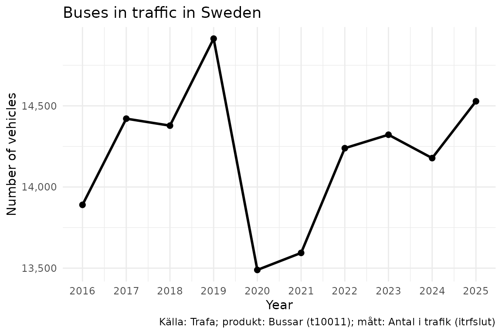
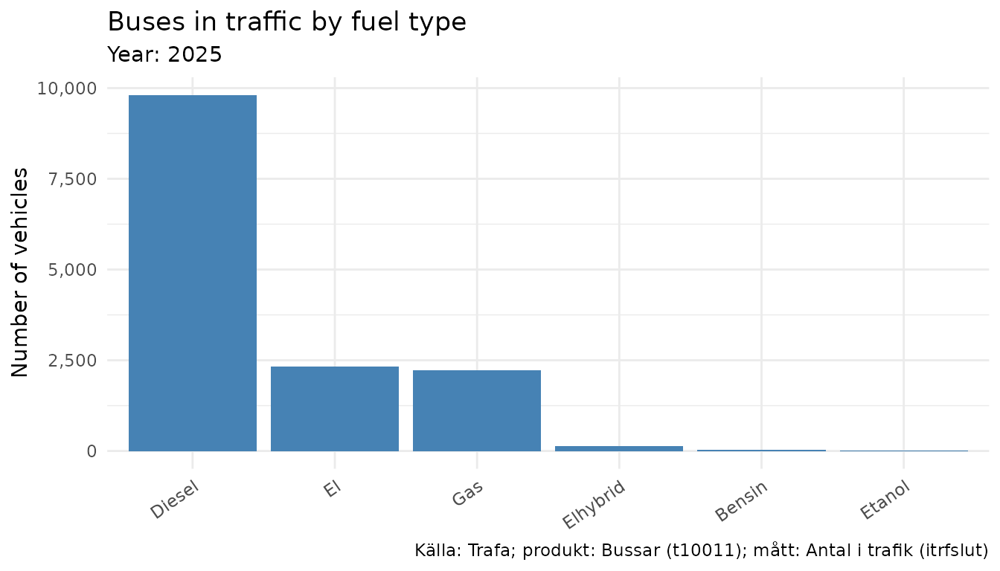
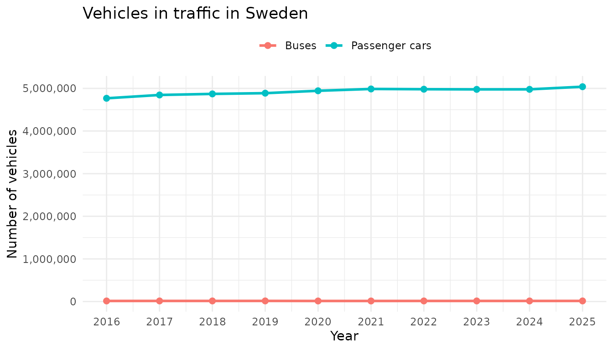

rTrafa is an R package for discovering,
inspecting and downloading Swedish transport
statistics from the Trafa API. This
vignette provides an overview of the methods included in the
rTrafa package and the design principles of the package
API. To learn more about the specifics of functions and to see a full
list of the functions included, please see the Reference
section of the package homepage or run ??rTrafa. For a
quick introduction to the package see the vignette A quick start guide to rTrafa.
The design of rTrafa functions is inspired by the design
and functionality provided by several packages in the
tidyverse family. rTrafa uses the base R pipe
(|>) throughout. Some vignette examples use
dplyr and ggplot2 for data wrangling and
visualisation:
install.packages("rTrafa")Trafa’s data model
The Trafa API organises Swedish transport statistics in a four-level hierarchy:
- Product — A statistical domain, e.g. Buses (t10011) or Passenger cars (t10016). Think of it as a family of related statistics.
- Measure — A specific KPI within a product. Buses has four measures: vehicles in traffic, deregistered, newly registered, and deregistrations.
- Dimension — A filterable variable such as year, fuel type, or owner category. Each dimension has discrete values you can select.
-
Value — The individual codes within a dimension
(e.g.
"2024","102"for Diesel).
There is also a grouping concept called Hierarchy. A
hierarchy like “Owner” groups related dimensions (“Owner category” and
“Licence type”) together. Hierarchies are purely organisational — they
cannot be used directly in queries. Their child dimensions appear in
get_dimensions() with the hierarchy name noted in the
hierarchy column.
rTrafa provides a function family for each of the first three levels:
| Level | List | Search | Describe | Extract | Values |
|---|---|---|---|---|---|
| Product | get_products() |
product_search() |
product_describe() |
product_extract_ids() |
— |
| Measure | get_measures() |
measure_search() |
measure_describe() |
measure_extract_names() |
— |
| Dimension | get_dimensions() |
dimension_search() |
dimension_describe() |
dimension_extract_names() |
dimension_values() |
Products
products <- get_products()The product table has one row per statistical product:
dplyr::glimpse(products)
#> Rows: 56
#> Columns: 5
#> $ name <chr> "t10011", "t10014", "t10015", "t10017", "t10018", "t10019"…
#> $ label <chr> "Bussar", "Motorcyklar", "Mopeder klass I", "Släpvagnar", …
#> $ description <chr> "", "", "", "", "", "", "", "", "Bussar\n\nDefinitioner-> …
#> $ id <int> 203, 206, 207, 209, 210, 211, 222, 227, 231, 232, 233, 234…
#> $ active_from <chr> "2019-01-10T10:17:00", "2019-01-10T10:25:00", "2019-01-10T…All entity tables support the same set of operations.
product_search() filters by regex:
products |>
product_search("Personbilar") |>
product_describe(max_n = 2)
#> ── t10094: Personbilar ──────────────────────────────────────────────────────────
#> Description: Personbilar
#>
#> Definitioner->Enskild näringsidkare: En enskild näringsidkare är en person som själv driver och ansvarar för ett företag. Enligt bolagsverket är en enskild näringsidkare inte en juridisk person. I fordonsregistret redovisas alla bolagsformer under juridisk person.
#> Active from: 2019-04-29T11:00:00
#>
#> ── t10026: Personbilar ──────────────────────────────────────────────────────────
#> Active from: 2020-05-08T12:59:00
#>
#> ... and 2 more product(s).product_extract_ids() extracts the name
column as a character vector — useful for passing into downstream
functions:
products |>
product_search("Personbilar") |>
product_extract_ids()
#> [1] "t10094" "t10026" "t10036" "t10016"Measures
Each product contains one or more measures. A measure is the statistic being observed — for example, Antal i trafik (vehicles in traffic) or Antal nyregistreringar (new registrations).
measures <- get_measures("t10011")
measures |> measure_describe()
#> ── itrfslut (Antal i trafik) ────────────────────────────────────────────────────
#> Product: t10011
#> Description: Avser i slutet av perioden
#>
#> ── avstslut (Antal avställda) ───────────────────────────────────────────────────
#> Product: t10011
#> Description: Avser i slutet av perioden
#>
#> ── nyregunder (Antal nyregistreringar) ──────────────────────────────────────────
#> Product: t10011
#> Description: Avser under perioden
#>
#> ── avregunder (Antal avregistreringar) ──────────────────────────────────────────
#> Product: t10011
#> Description: Avser under periodenExtract the names to use in get_data():
measures |> measure_extract_names()
#> [1] "itrfslut" "avstslut" "nyregunder" "avregunder"Dimensions
Dimensions are the filter variables available for a product. Use
get_dimensions() to discover them:
dims <- get_dimensions("t10011")
dims |> dimension_describe()
#> ── ar (År) ──────────────────────────────────────────────────────────────────────
#> Data type: Time
#> Selectable: Yes
#> Values (25): 2001 = 2001, 2002 = 2002, 2003 = 2003, 2004 = 2004, 2005 = 2005 ... and 20 more
#> Filters: senaste = Senaste, forra = Föregående
#>
#> ── avregform (Avregistreringsorsak) ─────────────────────────────────────────────
#> Selectable: Yes
#> Values (2): 20 = Utförda ur landet, t1 = Totalt
#>
#> ── dimpo (Direkt import) ────────────────────────────────────────────────────────
#> Selectable: Yes
#> Values (2): 10 = Direkt import, t1 = Totalt
#>
#> ── leasing (Leasing) ────────────────────────────────────────────────────────────
#> Selectable: Yes
#> Values (2): 30 = Leasade, t1 = Totalt
#>
#> ── bussklass (Bussklass) ────────────────────────────────────────────────────────
#> Description: Bussklasser enligt föreskrift nr 107 UNECE
#> Selectable: Yes
#> Values (7): 1 = A, 2 = B, 3 = I, 4 = II, 5 = III ... and 2 more
#>
#> ── drivm (Drivmedel) ────────────────────────────────────────────────────────────
#> Selectable: Yes
#> Values (10): 101 = Bensin, 102 = Diesel, 103 = El, 104 = Elhybrid, 105 = Laddhybrid ... and 5 more
#>
#> ── pass (Antal passagerare) ─────────────────────────────────────────────────────
#> Selectable: Yes
#> Values (12): 101 = – 20, 102 = 21 – 40, 103 = 41 – 50, 104 = 51 – 60, 105 = 61 – 70 ... and 7 more
#>
#> ── agarkat (Ägarkategori) [agare] ──────────────────────────────────────────────
#> Selectable: Yes
#> Values (3): 10 = Fysisk person, 20 = Juridisk person, t1 = Totalt
#>
#> ── tillst (Tillstånd) [agare] ──────────────────────────────────────────────────
#> Selectable: Yes
#> Values (3): 1 = Yrkesmässig trafik, 2 = Firmabilstrafik, t1 = TotaltHierarchies
Some dimensions are grouped under a hierarchy. In the output above,
dimensions marked with [agare] belong to the “Owner”
hierarchy. This is metadata that helps you understand the logical
structure — but when building a query, you use the child dimension names
directly (e.g. agarkat, not agare).
dims |>
dplyr::filter(!is.na(hierarchy))
#> # A tibble: 2 × 9
#> product name label data_type option description hierarchy n_values values
#> <chr> <chr> <chr> <chr> <lgl> <chr> <chr> <int> <list>
#> 1 t10011 agarkat Ägar… String TRUE "" agare 3 <tibble>
#> 2 t10011 tillst Till… String TRUE "" agare 3 <tibble>Dimension values and filter shortcuts
Each dimension has a set of valid values.
dimension_values() returns them as a tibble:
ar_vals <- dimension_values(dims, "ar")
ar_vals
#> # A tibble: 27 × 3
#> name label type
#> <chr> <chr> <chr>
#> 1 senaste Senaste filter
#> 2 forra Föregående filter
#> 3 2001 2001 value
#> 4 2002 2002 value
#> 5 2003 2003 value
#> 6 2004 2004 value
#> 7 2005 2005 value
#> 8 2006 2006 value
#> 9 2007 2007 value
#> 10 2008 2008 value
#> # ℹ 17 more rowsNote the type column. Entries with
type = "filter" are filter shortcuts —
dynamic values that the API resolves at query time:
-
senaste— the most recent available value -
forra— the previous value
These are useful for building queries that stay current without hardcoding years:
# Always gets the latest year, regardless of when you run it
get_data("t10011", "itrfslut", ar = "senaste")Regular dimension values (type = "value") can be
inspected too:
drivm_vals <- dimension_values(dims, "drivm")
drivm_vals
#> # A tibble: 10 × 3
#> name label type
#> <chr> <chr> <chr>
#> 1 101 Bensin value
#> 2 102 Diesel value
#> 3 103 El value
#> 4 104 Elhybrid value
#> 5 105 Laddhybrid value
#> 6 106 Etanol value
#> 7 107 Gas value
#> 8 108 Biodiesel value
#> 9 109 Övriga value
#> 10 t1 Totalt valueDimension validation
When you know which measure you want, get_dimensions()
can validate which dimensions are compatible:
# Only dimensions valid for the "itrfslut" measure
get_dimensions("t10011", measure = "itrfslut")
# See all dimensions with their validity status
get_dimensions("t10011", measure = "itrfslut", only_valid = FALSE)You can also pass several measures at once. The API returns the intersection — only dimensions that are valid for every measure in the vector. This is useful when you want to compare or combine measures and need to know which filters you can apply uniformly:
# Dimensions valid for BOTH "vehicles in traffic" and "new registrations"
get_dimensions("t10011", measure = c("itrfslut", "nyregunder"))For Buses, only ar (year) survives this intersection —
most other dimensions are specific to one measure or the other.
Fetching data
get_data() is the core function. Provide a product, a
measure, and optional dimension filters:
bus_data <- get_data("t10011", "itrfslut",
ar = as.character(2016:2025)
)
dplyr::glimpse(bus_data)
#> Rows: 10
#> Columns: 3
#> $ ar <chr> "2016", "2017", "2018", "2019", "2020", "2021", "2022", "2023…
#> $ ar_label <chr> "2016", "2017", "2018", "2019", "2020", "2021", "2022", "2023…
#> $ itrfslut <dbl> 13890, 14421, 14378, 14914, 13489, 13594, 14239, 14322, 14178…When simplify = TRUE (the default), each dimension gets
both a code column and a _label column with the
human-readable name.
Prepared queries
For complex queries, prepare_query() validates your
selections before hitting the data endpoint:
q <- prepare_query("t10011", "itrfslut",
ar = c("2023", "2024"),
drivm = c("101", "102", "103")
)
q
#> Trafa query: t10011 | itrfslut
#> Dimension filters:
#> ar = c("2023", "2024")
#> drivm = c("101", "102", "103")
#> Available (unfiltered) dimensions: ...
# Pass the validated query to get_data()
get_data(query = q)Data helpers
data_minimize() removes columns where all values are
identical — useful after filtering to a single year or fuel type:
get_data("t10011", "itrfslut", ar = "2024") |>
data_minimize()data_legend() generates a source caption for plots:
data_legend(bus_data)
#> [1] "Källa: Trafa; produkt: Bussar (t10011); mått: Antal i trafik (itrfslut)"Example: buses in traffic over time
Note how we convert the ar column to a proper
Date before plotting. Trafa returns ar as a
character column ("2016", "2017", …), and
plotting it as an integer can produce awkward ggplot2
breaks like 2020, 2022.5, 2025. Wrapping it in
as.Date(paste0(ar, "-01-01")) lets
scale_x_date() place tick marks on whole years. This is a
pattern you’ll want to reuse for any time-series analysis — both in
rTrafa and in the sibling packages rKolada and
pixieweb.
library("ggplot2")
bus_plot <- bus_data |>
dplyr::mutate(year = as.Date(paste0(ar, "-01-01")))
ggplot(bus_plot, aes(x = year, y = itrfslut)) +
geom_line(linewidth = 1) +
geom_point(size = 2) +
# Years as dates, one tick per year
scale_x_date(date_breaks = "1 year", date_labels = "%Y") +
scale_y_continuous(labels = scales::comma) +
labs(
title = "Buses in traffic in Sweden",
x = "Year",
y = "Number of vehicles",
caption = data_legend(bus_data)
) +
theme_minimal()
Example: fuel type breakdown
drivm_data <- get_data("t10011", "itrfslut",
ar = "senaste",
drivm = c("101", "102", "103", "104", "105", "106", "107")
)
ggplot(drivm_data, aes(
x = reorder(drivm_label, -itrfslut),
y = itrfslut
)) +
geom_col(fill = "steelblue") +
scale_y_continuous(labels = scales::comma) +
labs(
title = "Buses in traffic by fuel type",
subtitle = paste("Year:", drivm_data$ar_label[1]),
x = NULL,
y = "Number of vehicles",
caption = data_legend(drivm_data)
) +
theme_minimal() +
theme(axis.text.x = element_text(angle = 35, hjust = 1))
Example: comparing vehicle types
By fetching the same measure from different products we can compare across vehicle types:
pbilar_data <- get_data("t10016", "itrfslut",
ar = as.character(2016:2025)
)
comparison <- dplyr::bind_rows(
bus_data |> dplyr::mutate(vehicle = "Buses"),
pbilar_data |> dplyr::mutate(vehicle = "Passenger cars")
) |>
dplyr::mutate(year = as.Date(paste0(ar, "-01-01")))
ggplot(comparison, aes(x = year, y = itrfslut, color = vehicle)) +
geom_line(linewidth = 1) +
geom_point(size = 2) +
scale_x_date(date_breaks = "1 year", date_labels = "%Y") +
scale_y_continuous(labels = scales::comma) +
labs(
title = "Vehicles in traffic in Sweden",
x = "Year",
y = "Number of vehicles",
color = NULL
) +
theme_minimal() +
theme(legend.position = "top")